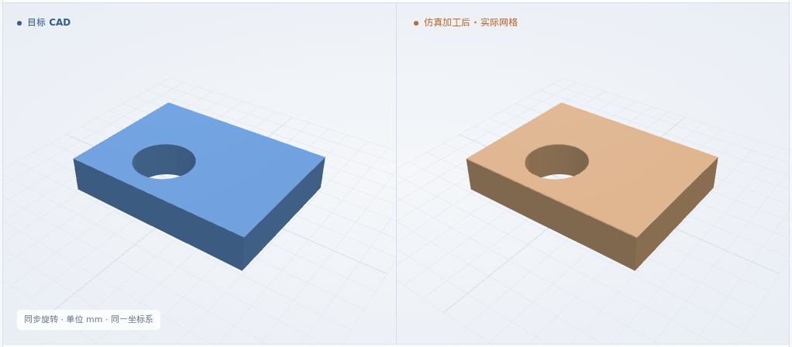
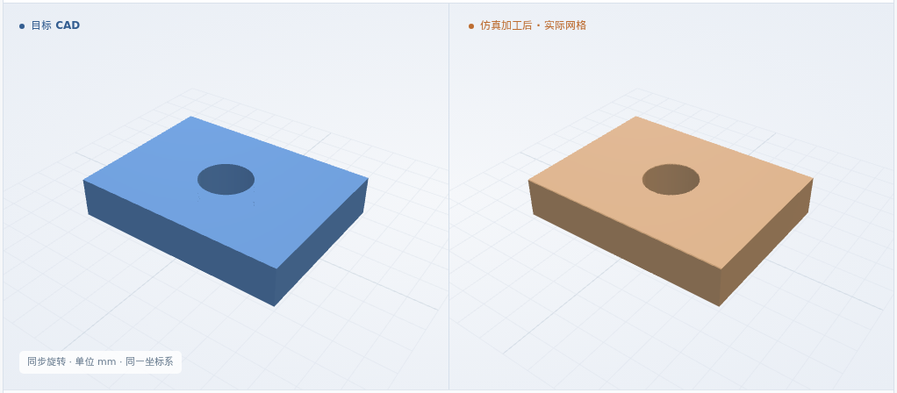
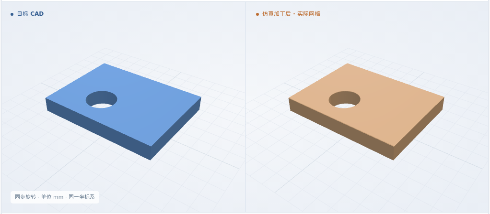

基准单孔代表用例
φ2 · 孔心 (3, 2) · 厚 1.5 mm
体积 IoU99.9753%
矩形薄板 · 单个通孔 · 通用 XYZ / 单钻头 · 6061-T6 材料标签
IoU = 原 CAD 与仿真剩料的交集体积 / 并集体积
φ2 · 孔心 (3, 2) · 厚 1.5 mm
φ2.5 · 孔心 (3, 2) · 厚 1.5 mm

φ2 · 孔心 (4, 3) · 厚 1.5 mm

φ2 · 孔心 (3, 2) · 厚 1 mm

每组图片均由实际 CAD 显示网格与仿真结果渲染；加工结果可下载为 STL 网格。
毛坯 → 钻入 → 继续钻削 → 接近贯穿 → 完成
三维回放暂不可用；仍可查看上方实际结果图片和下载形状。
φ2 · 孔心 (3, 2) · 8 × 6 × 1.5 mm；其他用例复用同一流程
卡片与 CAD 尺寸一致；刀具、坐标和参数齐全。缺项或冲突则停止。
本例准备检查通过 ↗重读 CAD 核对孔特征；检查 NC 的单位、孔位、刀具、进给和深度。
本例 NC 与方案一致 ↗核对执行的 NC、配置和闭合网格；与原 CAD 比较 IoU，再逐项测量孔径、孔位和贯穿。
本例几何测量结果 ↗孔径：名义值 ±0.1 mm；孔心偏差：≤0.1 mm；贯穿：9 条轴向探测线均无材料交点。孔径与孔位采样 11 个截面，数值保护带为 2 个网格步长。
完整软件条件 ↗ · 错孔位 / 未钻通反例 ↗以上为软件用例结果；制造验收依据仍待补齐，粗糙度、材料物理和装夹碰撞尚未验证。